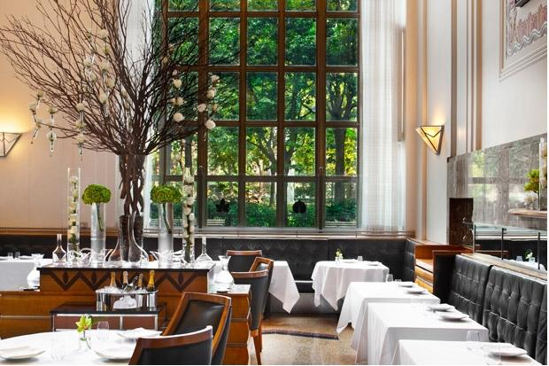

1) The French Laundry, Yountville, Calif.
How did a chef whose innovative restaurant in Manhattan failed and who headed west to cook in a downtown LA hotel suddenly emerge in the Napa Valley to create a restaurant to rival the great three-star establishments of rural France? Hard work and outsize talent, most probably. Taking over what had been a good but far simpler restaurant located in a turn-of-the-century stone building surrounded by gardens, chef Thomas Keller approached contemporary American food with classical technique. His French Laundry,with its now-famous blue door, has established new standards for fine dining in this country. Two $270 nine-course tasting menus are devised each day (one traditional and one vegetarian), and no single ingredient is ever repeated throughout the meal. The classic "Oysters and Pearls," pearl tapioca with Island Creek oysters and white sturgeon caviar, is a perennial favorite, though, and while items like sautéed cod with tamarind-glazed eggplant and tomato chutney might sound simple, the techniques used are anything but. In 2012, Keller and The French Laundry received a coveted AAA Five Diamond Award, just another honor to add to the pile.
2) Gramercy Tavern, New York City
Gramercy Tavern is among the finest of the new wave of classic American restaurants (remember that Tom Colicchio was founding partner and chef here before he left to open his own restaurants and become a TV star). With Danny Meyer running the show and Michael Anthony (who previously spent time at Daniel and helped Dan Barber develop his influential style at Blue Hill at Stone Barns) in control in the kitchen, the restaurant continues to excel at serving refined American cuisine without pretension. Anthony has become known for his simply prepared fish dishes in particular, such as flounder with cabbage, leeks, olives, and oyster mushrooms, as well as butternut squash custard with carrots and hazelnuts, and pork loin and belly with navy beans, tasso, and kale. From the artwork to the lavish floral arrangements and from the copper-and-candle glow to the reputation for flawless service, a meal at Gramercy Tavern is one you’re not likely to forget any time soon.

3) Le Bernardin, New York City
Think Le Bernardin and you think accolades: Michelin, The New York Times, James Beard Foundation (plus a recent entry into the AAA Five Diamond club). A super sleek renovation in 2011 gave it more than a fresh coat of paint; it livened up the entire space, and a leather-clad lounge replaced a formerly sleepy bar. This iconic restaurant isn’t going anywhere any time soon, and if cooking fish well is an art, then chef Eric Ripert is a Michelangelo; his contemporary French touch has led some to call his creations — among them thinly shaved geoduck with osetra caviar and wasabi-citrus mousseline and poached skate and warm oysters, Brussels sprouts-bacon mignonette, and Dijon mustard sherry emulsion — the world's best seafood.
4) Momofuku Ssäm Bar, New York City
Meals at this ever-evolving East Village hot spot wowed former New York Times critic Frank Bruni into a praise-filled three-star review in 2008, and no wonder. David Chang's food offers bold, Asian-inspired flavors — like his duckaholic lunch and popular bo ssäm dinner (slow-cooked pork shoulder, oysters, rice, kimchee, and sauces to be wrapped in bibb lettuce leaves). Chang continues to be the culinary cool kid while cementing his status as a top-tier chef by constantly expanding his empire, and everything he touches seems to turn to gold (his high-tech cocktail bar with Dave Arnold, Booker and Dax, is already ranked among the city’s finest).
5) Eleven Madison Park, New York City
Like many of the finest things in life, Eleven Madison Park is a restaurant that seems to get better with age. Although it opened to much fanfare and subsequent acclaim in 1998, it was Danny Meyer’s hiring of Swiss-born Daniel Humm to helm the kitchen in 2006 that elevated the place to the level of the finest restaurants in the country. Humm — who has won such plaudits for the restaurant as four stars from The New York Times and three from Michelin — bought Eleven Madison from Meyer in 2011, in partnership with his front-of-house counterpart, Will Guidara, and didn’t miss a beat. The two aren't resting on their laurels, either; they did away with the minimalist "grid" menu in November 2012 and introduced a $195 multi-course tasting menu focused on the "extraordinary agricultural bounty of New York and on the centuries-old culinary traditions that have taken root here," according to the restaurant's website. As expected, it’s received rave reviews. They’ve also pushed culinary boundaries by taking part in a s old-out kitchen "swap" with Chicago’s Alinea (number 14 on this list). The Willem de Kooning quote on the front page of their website says it all: "I have to change to stay the same."
6) Blue Hill at Stone Barns, Pocantico Hills, N.Y.
High-profile organo-loca-sustainavore Dan Barber has found the perfect home at Blue Hill at Stone Barns, a beautiful restaurant in a bucolic but hardworking setting on a year-round farm and educational center. Most of what you eat here will be grown, raised, and/or processed on the property, and Barber’s modern American food is full of color and flavor. There’s a reason why he’s one of the most relevant chefs in the country right now, and after seeing how he treats his ingredients you’ll understand exactly why.
7) ABC Kitchen, New York City
ABC Kitchen is a celebration of the best ingredients that each season has to offer, all served in the classically elegant style for which Jean-Georges Vongerichten is widely known. Market-fresh dishes from chef Dan Kluger, like roasted carrot and avocado salad with crunchy seeds, sour cream, and citrus, stand alongside Vongerichten mainstays like pretzel-crusted calamari. The décor is fresh, with an utterly cool urban sophistication that pairs perfectly with the style of the home furnishings store it’s connected to, ABC Carpet and Home. The restaurant was awarded the recognition of Best New Restaurant by the James Beard Foundation in 2011, and remains in the rotation for serious restaurant-goers in New York City.
8) Babbo, New York City
As Mario Batali continues his reign atop the American culinary landscape, his flagship restaurant, Babbo, remains a New York essential. What can you say about this place that hasn't already been said? The pasta! That pork chop! Mario Batali is a genius! Rock music in a fine dining restaurant? Brilliant! At this longtime darling of the critics, after almost 15 years, you're still at the mercy of the reservation gods if you want to get in (but we’ve had some last-minute luck by closely monitoring their Twitter feed). Buona fortuna!
9) Girl & the Goat, Chicago
It’s impossible to step inside Girl & the Goat, Stephanie Izard’s West Loop restaurant, popular with chefs and locals alike, and not feel the joy — the sense of community and comfort are widely apparent, from the soundtrack of pop and rock hits playing in the background to the broad communal bar table. The best part about the restaurant, though, is how well-made every dish is, from locally sourced creations like wood-grilled broccoli with Rogue Creamery Smokey Bleu cheese and "spiced crispies" to such whimsical plates as escargot ravioli with bacon and tamarind-miso sauce. Her formula certainly seems to be working; in December 2012, Little Goat, her tribute to the classic diner, opened right across the street.
10) Cochon, New Orleans
A serious cult favorite since it opened in 2006, Cochon is the domain of pork-loving chef Donald Link, proprietor of the popular Herbsaint and winner of a James Beard Award for his cookbook Real Cajun. Inspired by Cajun and Creole culinary traditions, Link serves dishes like roasted shrimp with hog jowls and Louisiana cochon (roast pig) with turnips, cabbage, and cracklins, as well as such non-porcine delights as fried alligator with chile garlic aïoli and rabbit with dumplings. Things are still on fire at this NOLA hot spot — chef Stephen Stryjewski won a 2011 James Beard Award for Best Chef in the South, and Link was named 2012 Restaurateur of the Year by the Louisiana Restaurant Association. Even Cochon Butcher, the hybrid meat market, sandwich shop, and wine bar located right next door, has lines out the door on the weekends.